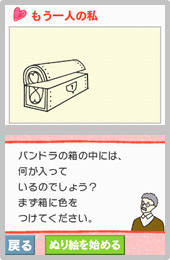
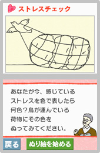

──
色彩心理学は、大人のカウンセリングにも使われているんですよね。
末永
はい。今回の『DSココロぬりえ』に入っている心理テスト的なものもそれにあたります。通常の心理カウンセリングでは、言葉を使ってその人の内面について気づきを得ていきますが、言葉は価値観を伴うので、たとえば母親に不満を持っていたとしても、なかなかそれを表に出せないんです。しかし、色には善悪はないので、それまで出せなかった感情が出せたりする。「アートセラピー」という言葉がありまして、色は感情を直接刺激しますから、感情によって抑えられていたブロックが外れて、気づくべき自分の問題を見つめられる。感情を出すこと自体が目的ではないですが、色として目に見える形で表現されると、まな板の上で客観的に検証できるという意味で効果があるんです。


江崎
たとえば講座にいらっしゃって、お仕事が楽しくてストレスはないとおっしゃる方に、お仕事についてのイメージを自由に描いていただくんです。すると、私たちから見るとものすごくストレスがたまっている時に使うような色が出てくることがあるんですね。ご自身では苦しくならないようにがんばっていらっしゃるつもりでも、実際にはかなりしんどいんじゃないかなと。そうしたことをきっかけにしてカウンセリングやワークショップなどを行うんです。このように色をもうひとつの言葉として使うと、そうした心の深いところが理解しやすくなるんです。
末永
ただし、大人の場合はどうしても色についての既成概念があって、常識の範囲内の色しか使わないことがあるんです。それだと心理状態が反映されないので、まずとにかく自由に描いてもらうところからはじめる必要がありますね。また、私たちが行っている講座では、受講者のみなさんに幼い頃からの色彩の記憶を思い出す「カラーヒストリー」というワークをやってもらいます。これによって、その人固有の色と心の関わりを知ることができ、こうしたデータを蓄積して私たちは色の意味を特定していくわけなのです。
でも、一言に赤と言っても、がんばっているというポジティブな意味と怒っているというネガティブな意味の両面があるので、一方的に決めつけることはできないんです。しかし、いずれにせよ赤を好む時は自律神経系のうち交感神経系が優位になっているということなんですね。色の効果は、人間の生理に近いところで考えるとわかりやすいんです。緑の場合は、リラックスしている時にも、元気がない時にも出てくる。これは副交感神経系が優位になっている、というわけです。
でも、一言に赤と言っても、がんばっているというポジティブな意味と怒っているというネガティブな意味の両面があるので、一方的に決めつけることはできないんです。しかし、いずれにせよ赤を好む時は自律神経系のうち交感神経系が優位になっているということなんですね。色の効果は、人間の生理に近いところで考えるとわかりやすいんです。緑の場合は、リラックスしている時にも、元気がない時にも出てくる。これは副交感神経系が優位になっている、というわけです。